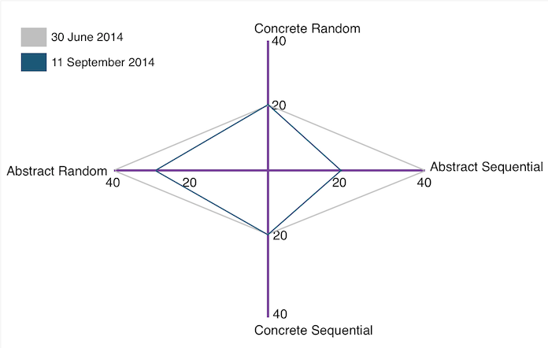
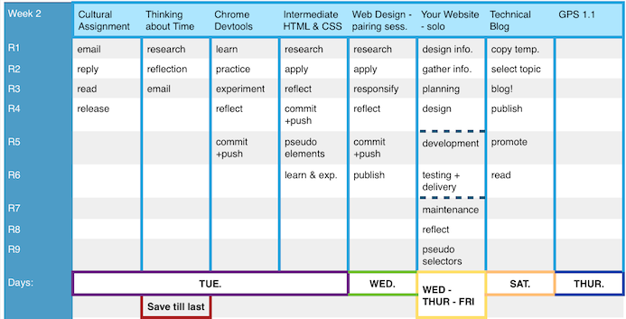

Thinking Style, Time Management, and Other Things I Can Improve
↑ You’re probably thinking to yourself ‘Does that graph up there even mean anything?’. Well, it probably means nothing to you, but it does mean something to me. And those of you who have already created similar Gregorc Thinking Style graphs probably noticed that I switched some of the labels around.
This graph represents a change in my thinking style over the last 2 months. I laid both of the ‘abstract’ categories along the x axis so that you can see how my thinking has gone from a culmination at the abstract extremes, to a relatively more even shape. This is the funny thing about tests geared towards assessing your personality; we are continuously changing as people from moment to moment. So there really isn’t one label or set of data that can we can define ourselves by. That being said, I am still leaning towards Abstract Random (even though my score has gone down from 40 to 24). I will address this after I describe the struggles I have endured during Phase 0.
By the way, writing out the solution to the Gregorc Thinking Style quiz is a total pain. A DBC alum, Matt Baker, created a simple ruby program to help calculate your thinking style: Check it out.
Phase 0 - The Struggles
I will admit that I struggled the most during week 1 of Phase 0 and the major contributing factor was my lack of preparation. I don’t mean the lack of academic preparation, I completed all the Phase 0 Prep Competencies, I felt confident in all of my answers to questions in Chris Pine’s Learn to Program. I took all the academic work seriously. What I didn’t do, and I wish I had done, was lay out all of the work for week-1 before the week began. At the start of the week, I seemed to have a good handle on the first couple challenges. But when it came to design thinking and building a blog from scratch, I found myself sinking. I didn’t understand what each release wanted from me right way and I spent too much time redoing design elements (by too much time, I mean, I spent several hours tweaking 3 padding values, just to get it ‘right’). My time was divided up in a very uneven way. I basically spent an entire day on wire framing and a couple days on designing my blog post (ridiculous right?). On top of all of that, I would dive into my work and get lost for about 6 hours straight. But the last two hours were almost always spent erasing my work, and redoing things, then running into problems, erasing more work, redoing that, running into different problems, erase some more, rinse, lather, repeat. I was a mess. I gave my weekend up to work until 15 minutes before the submission deadline. That is a blaring indicator of bad of time management skills. I honestly wish I could say that I procrastinated. But I didn’t. I just badly overworked myself for no real reason; my work didn’t even live up to the amount of effort I had put into it. The whole situation was discouraging.
So its time management, not learning style, that really put me at a disadvantage. Here’s the good news, I learned from my mistakes and changed things during week 2 and week-3. On Sunday of week-1, after submitting my work, and exasperating exclaiming “thank god!”, I knew something had to change. I did 2 things differently. 1)I created a list of all the challenges of the upcoming week and planned out which ones I will tackle on what days of the week. I was very careful to give myself enough time for research, mental preparation, meals, rescheduled peer pairing sessions, etc. 2)I started to pay close attention to how I spend my time solving each challenge.
Here’s what one of those charts looks like:
This tactic seemed to help tremendously. I was able to spend an a couple hours on Saturday writing up my technical blog post, and all my work was in by 8pm so I could go out and have fun after. The other thing that helped me was taking breaks. I know that sounds a little counter intuitive, but just taking some time to focus on myself. Whether it was hitting a yoga class, going out to eat with a friend, getting away from my work to make myself a meal (sometimes I will snack while I work, and forget to eat real meals), all of those small periods where I was physically separated from my code, contributed to gaining a greater amount of clarity. Taking more breaks actually helped me work more efficiently. Sometimes, while I’m on a break, a solution to a problem just comes to me and thats always helpful too.
Thinking Style: Abstract Random
Profile from: Mind Styles - Anthony Gregorc
This learner likes: to listen to others, bringing harmony to group, establishing healthy relationships with others, & focusing on the issues at hand
They learn best when: in a personalized environment. Given broad or general guidelines. Able to maintain friendly relationships. Able to participate in group activities
What's hard for them? Having to explain or justify feelings. Competition. Working with dictatorial/authoritarian personalities. Working in a restrictive environment. Working with people who don’t seem friendly. Concentrating on one thing at a time. Giving exact details. Accepting even positive criticism.
There are a few things about this that I agree with. Its really hard for me to work with people who don’t seem friendly. It makes me feel like they don’t care about me or the work itself. Thus, I feel like have to make up for where they lack because I can’t trust them. It creates an unhealthy dynamic. But I think this is true of most people who face someone who is unfriendly or unwilling. Working with friendly and open individuals is a lot easier than working with someone who doesn’t want to be working with you in the first place. I don’t see any easy way around this kind of obstacle. But I do know, that in the past, being honest, open, and friendly even while facing unfriendliness is always the best thing to do. Especially because that unfriendliness could be born through some sort of insecurity. So being secure in myself and my abilities would be the best way to combat that sense of insecurity. I think this strategy would work for dictatorial/authoritarian personalities as well.
Growth vs. Fixed Mindset
I was captivated by Carol Dwek’s notion of a growth and fixed mindset even before Phase 0 had began. This graphic explains the two mindsets in a very coherent way. I even made a tumblr post about it back in June. Although, a lot that has changed since my tumblr post. I have been trying to approach each Phase 0 challenge with a strong growth mindset. Instead of worrying about what people would think of my work, or how they would view me if I asked a certain question — I am just going for it. I see the challenges as opportunities to grow and learn. Instead of worrying about where I ranked in a class of 30, I am beginning to think about all the great things that each one of my peers brings to the table. I am starting to realize that each one of us has a unique set of talents, and the more time we spend learning from each other, the better environment we create overall. I still have many areas in my life where I am still a fixed mindset and I hope to improve on those as well, especially when it comes to my own health. Just being aware of the fact that I can train my brain to slowly progress to a more positively influenced life is a wonderful thing. Neuroplasticity is based on scientific fact, hence, the baby steps we take towards having a growth mindset outlook on life is imperative to who we become in the future.
{kind=link}
By: Sharmila Jesupaul on September 12, 2014